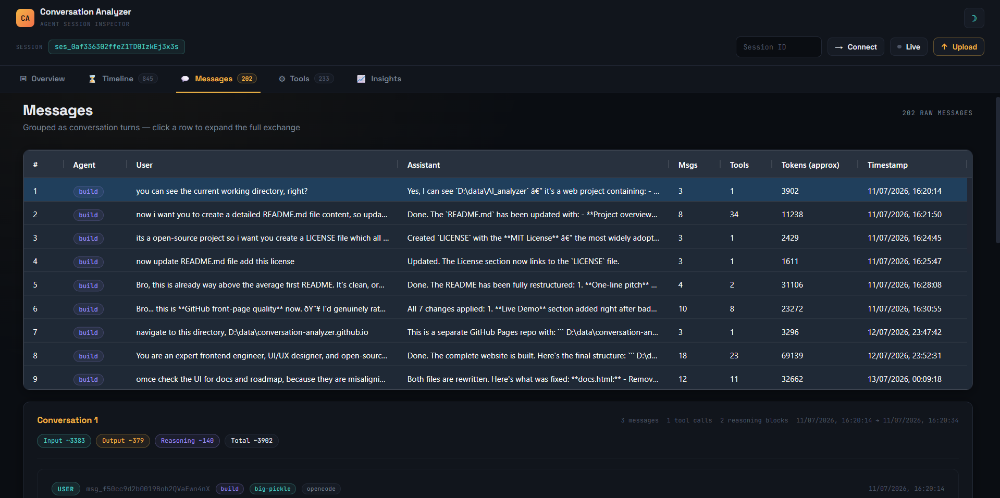
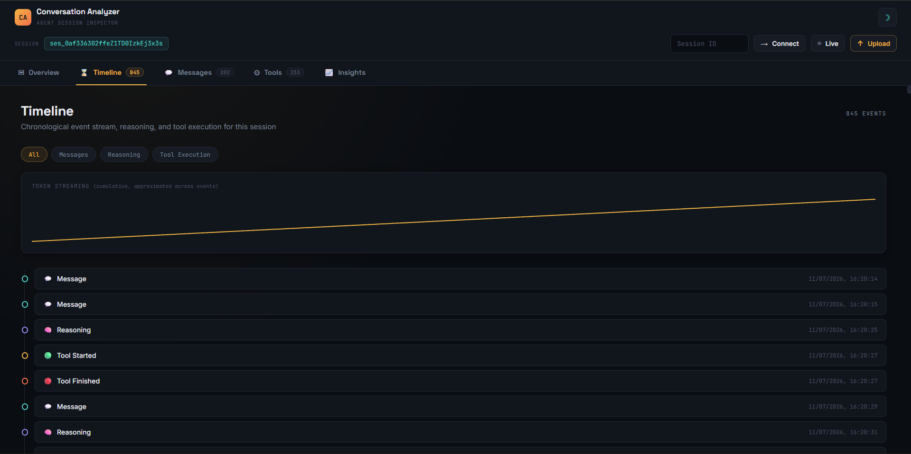
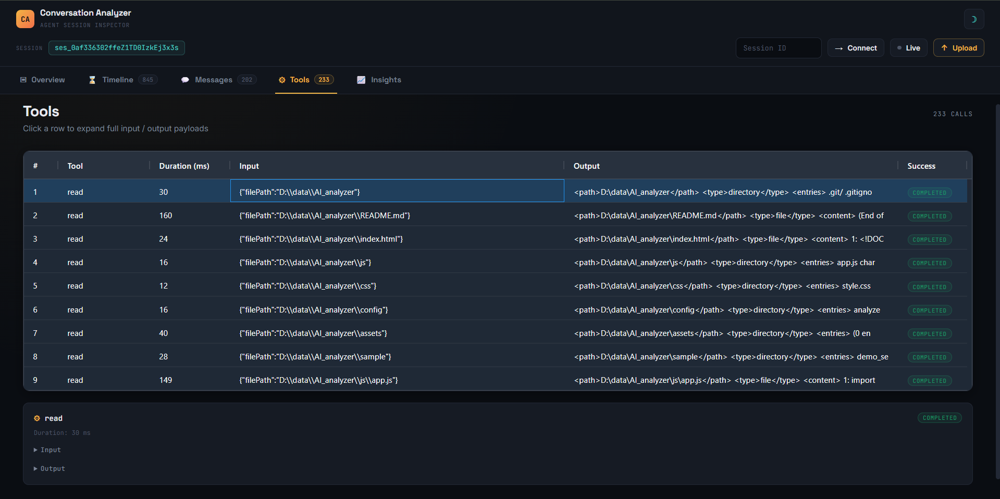
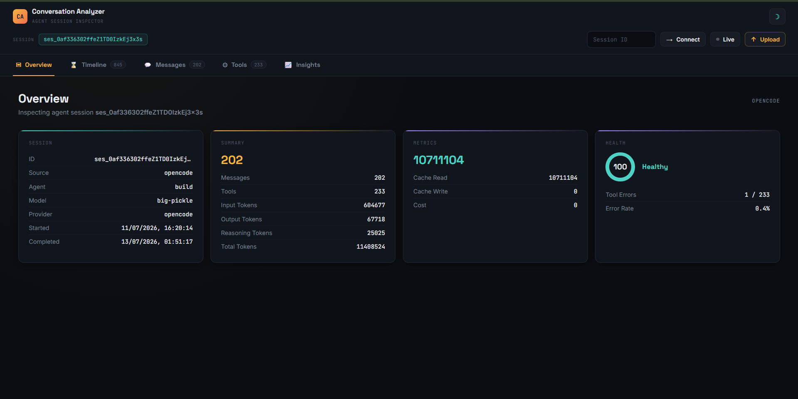

AI Conversation Analyzer packs a comprehensive suite of analysis tools into a single, privacy-first, browser-based application. Explore each feature below.
Group raw messages into meaningful conversation turns with expandable details. Each turn captures the full exchange between user and assistant, including role badges, timestamps, and content previews. Expand any turn to see the complete message body, nested tool calls, and embedded reasoning traces.
Messages are automatically grouped by turn boundaries. Each turn displays the assistant's response alongside the user's prompt. Expandable sections reveal the full content, including markdown-rendered text, code blocks with syntax highlighting, and inline tool call summaries.


See your entire conversation as a chronological event stream. Every message, tool call, and reasoning step is placed on a timeline with precise timestamps and relative offsets. Filterable chips let you isolate specific event types — messages, tool calls, reasoning blocks, or errors — for focused analysis.
The timeline renders events in strict chronological order. Each event shows its type icon, duration where applicable, and a compact summary. Click any event to jump to its full details. Filter chips at the top let you toggle visibility of each event category independently.
Get a complete breakdown of token usage across every dimension that matters. Input tokens, output tokens, reasoning tokens, cache reads, and cache writes are all tracked separately with interactive bar charts and cumulative totals. Understand exactly how your token budget is being spent.
Token charts show per-turn and cumulative usage across five categories. A stacked bar visualization makes it easy to see the ratio of input to output tokens. Cache hit rates are highlighted so you can identify opportunities to reduce costs. Hover any bar for exact counts and percentages.
Interactive token breakdown charts

Every tool call the model makes is captured with full fidelity. See the tool name, input parameters, output payload, execution duration, and success or error status. Tool calls are displayed inline within conversation turns so you can see exactly what the model requested and what it received back.
Each tool call card shows the function name, a compact summary of the input arguments, the full JSON output, and a color-coded status badge. Duration is displayed prominently so you can spot slow calls at a glance. Failed calls are highlighted with error details extracted from the response.
Peek inside the model's thinking process. When reasoning tokens are present in the API response, the analyzer extracts and displays them in a dedicated reasoning panel. Follow the chain of thought from initial analysis through intermediate steps to the final conclusion, all rendered in a readable format.
Reasoning blocks are extracted from the model's extended thinking output and displayed in a collapsible panel. Each reasoning step is labeled with its position in the sequence. Token counts are shown for each step so you can see where the model spends the most thinking budget. Reasoning is also correlated with the final output to show the path from thought to response.
Model reasoning chain visualization

Browse all your sessions in powerful AG Grid tables with full sorting, filtering, and column customization. Every session is summarized with key metrics — total tokens, turn count, duration, tool calls, and estimated cost. Click any row to dive into the full session analysis.
The session explorer renders a data grid with sortable columns for every metric. Filter by model name, date range, token count, or cost threshold. Column visibility is customizable so you can focus on the metrics that matter most. Quick-action buttons let you open, compare, or export sessions directly from the grid.
Measure and visualize the performance characteristics of every conversation. Latency is broken down per turn with p50 and p95 percentile calculations. Context accumulation curves show how the conversation grows over time. Acceleration detection identifies turns where the model sped up or slowed down significantly.
Performance charts plot response latency across all turns with percentile overlays. A context accumulation chart shows token count growth per turn, helping you understand when context pressure begins to affect performance. Anomaly markers highlight statistically significant latency spikes for quick investigation.
Latency percentiles and context curves
Track API costs per session, turn, and tool call
Track exactly where your API budget goes. Costs are calculated per session, per turn, and per individual tool call using current pricing tables for supported models. See cumulative cost curves, identify the most expensive turns, and understand which tool calls consume the largest share of your budget.
Cost breakdowns are computed from token counts and model-specific pricing. A cumulative cost chart shows spending over the course of the session. Per-turn cost tables rank turns by expense. Tool call cost summaries highlight the most expensive operations. All costs are displayed in USD with configurable currency display.
Every AI platform exports conversations in a different format. The universal parser normalizes all of them into a single, well-defined ConversationSpec model. This normalized representation powers every visualization and analysis tool in the application, regardless of which platform produced the original data.
The parser implements a schema-driven approach with platform-specific adapters. Each adapter handles format detection, field mapping, and data normalization. The resulting ConversationSpec includes typed message objects, tool call records, reasoning traces, usage metadata, and session-level statistics — all in a consistent, queryable structure.
Normalized ConversationSpec model
Compare different agents and models side by side
Compare how different agents and models approach the same task. Load sessions from multiple agents side by side and analyze differences in token usage, reasoning depth, tool call patterns, latency, and cost. Identify which agent performs best for specific task types and understand behavioral differences across models.
The comparison view normalizes metrics across agents so you can make apples-to-apples comparisons. Overlaid charts show token distribution, latency profiles, and cost curves for each agent. A summary table ranks agents by key performance indicators. Agent metadata — model name, provider, version — is displayed for reference.
The entire application is built on a plugin-ready connector system. Adding support for a new AI platform requires only three components: a connection handler, a datasource adapter, and a parser. The abstract connector interface ensures that every new integration plugs directly into the existing visualization and analysis pipeline.
The architecture separates concerns into connection (how to reach the data), datasource (how to read the data), and parser (how to normalize the data) layers. Each layer has a well-defined interface. Existing connectors for OpenCode, Claude, ChatGPT, and others serve as reference implementations. The plugin system auto-discovers connectors at runtime.
Plugin-ready connector system
100% browser-based, no data leaves your machine
Every analysis runs entirely in your browser. Your conversation data is never sent to any server, analytics endpoint, or third-party service. There are no telemetry calls, no cloud dependencies, and no account requirements. Your AI conversations — which may contain sensitive code, business logic, or personal information — stay on your machine, period.
The application is a static site with zero server-side components. All data processing happens in JavaScript within the browser sandbox. No cookies are set, no localStorage is used without explicit consent, and no external requests are made beyond loading the initial static assets. The entire tool works offline once loaded.